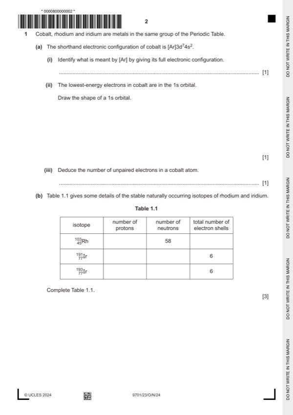

Question 1

Original paper page 2
Part 1(a)(i) — solution
- 1s2 2s2 2p6 3s2 3p6 1
Mark points
- 1s2 2s2 2p6 3s2 3p6 1
Part 1(a)(iii) — solution
3 (three) 1
Mark points
- Include the ideas shown in the solution above.
Part 1(b) — solution
Answer: 3 · 103
3
number of number of total number of
isotope
protons neutrons electron shells
103
● 45 ●5
Mark points
- Correct result: 3
- Correct result: 103
Part 1(c) — solution
Answer: OR · OR
mass of an atom of an isotope 1
compared to the mass of the unified atomic mass unit (amu ) 1
OR
on a scale on which a carbon-12 atom has a mass of exactly 12 units
OR
Mark points
- Correct result: OR
- Correct result: OR
Part 1(d)(i) — solution
Answer: OR · OR
- [M1] = 0.380 : 1.14 = 1:3
- [M2] x = 3 1
Mark points
- [M1] = 0.380 : 1.14 = 1:3
- [M2] x = 3 1
Part 1(d)(ii) — solution
molecules with the same structural formula and same molecular formula with different 3D / different spatial arrangement of 1
atoms / groups
Mark points
- Include the ideas shown in the solution above.
Part 1(d)(iii) — solution
a single product is made 1
Mark points
- Include the ideas shown in the solution above.